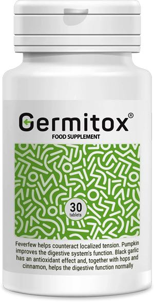

A betegségek 80%-át parazitafertőzés okozza. Hogyan ne váljunk a helminták áldozatává?

”A parazitafertőzés számos betegség kialakulásával jár: cukorbetegség, magas vérnyomás, különböző típusú rák, meddőség és még sorolhatnánk. Ennek az az oka, hogy a paraziták végtermékei olyan toxinokat tartalmaznak, amelyek immunhiányt okoznak” – közölték az Egészségügyi Világszervezet hivatalos képviselői újságírókkal való találkozásuk során 2019. december 25-én.
A parazitafertőzések és a különböző betegségek közötti összefüggésről beszélt Dr. Fejér Annamária PhD, professzor, parazitológus .
Ma egy kissé szokatlan, de nem kevésbé fontos témáról fogunk beszélni. Nézzük a hivatalos statisztikai adatokat:
-
• Az Egészségügyi Világszervezet szerint mintegy 4,5 milliárd ember szenved különféle parazita betegségekben – ez a világ népességének több mint 60%-a
-
• Minden harmadik európai lakos érintett a parazita fertőzésben
-
• Évente 15-17 millió ember hal meg parazita fertőzésekben
-
• A helminthiasis a harmadik leggyakoribb betegség a világon
Vagyis nagy valószínűséggel az ön szervezetében is vannak élősködők. De ha nem, akkor is jó eséllyel megfertőződhet.
Ismert tény, hogy az élő szervezet nem képes túlélni szilícium nélkül. A szervezetben elszaporodó paraziták mindenekelőtt a szilíciumot kezdik el fogyasztani. Szilícium nélkül viszont a kalcium – amiből a csont felépül – nem képes tovább felszívódni. Ebből alakul ki a radikulitisz, az oszteokondrózis és a poliartritisz.
 Trichomonas
Trichomonas
A parazitológia legérdekesebb felfedezése 1989-ben történt, és “A trichomonas daganatos sejtekké való degenerációja” elnevezést adták neki. Kiderült, hogy a rák olyan betegség, amelyet paraziták okoznak. És a daganatok fő provokátora a trichomonas.
Így valamennyi betegség kórokozói a protozoák, gombák és helminták.
”A túlsúly és a helminták nem összeegyeztethetők” – gondolja ön? De ez nem igaz. A galandférgekkel fertőzött emberek esetében például a zsír válik az egyetlen védelemmé a toxikus hatásokkal szemben.
Egy parazitákkal fertőzött delfin agya. Ön szerint az embernél ilyesmi nem fordulhat elő?...
Manapság szinte minden városban élő ember szervezetében megtalálhatók a férgek vagy a gombás fertőzések. „Ha szinte mindenkiben benne vannak, akkor ez a normális?”- kérdezi ön. Nem, nem normális!
Mi, parazitológusok, már régóta aggódunk emiatt. A fő probléma az, hogy hiányoznak azok az eszközök, amelyek képesek lennének megsemmisíteni minden lehetséges emberi parazitát anélkül, hogy közben kárt tennének magában az emberben.
Pont néhány nappal ezelőtt fejeződtek be azok a klinikai vizsgálatok, amelyeket az új Germitox nevű készítményen végeztek. Immár magabiztosan kijelenthetem, hogy ez áttörés a parazita fertőzések kezelésében. A teljes szanáció mellett az Germitox kiváló „mellékhatásokkal” rendelkezik: megtisztítja a szervezetet a salakanyagoktól és a toxinoktól, jótékony hatással van az emésztőrendszeri szervekre, stimulálja az epe kiáramlását, megszünteti a fekélyt, gyomorhurutot és sok krónikus betegséget; javítja a bőr, a haj és a köröm állapotát; normalizálja a székletet; megszünteti az allergiát.

Jelenleg az Germitox gyártó hivatalos weboldalán vásárolható meg alacsony áron. Siessen, mert hamarosan az Germitox bekerül a gyógyszertárakba, és teljesen más áron fogják értékesíteni.
Megjegyzések:
Kati
gyerekek, ez borzalom... az étvágyam is elment tőle:((((((((((
Mónika
tisztaságmániás vagyok. Naponta százszor megmosom a kezemet. Folyamatosan van nálam mindenféle baktériumölő szer. Szóval remélem, hogy nekem soha nem lesz benne részem. Megyek és még egyszer kezet mosok... a biztonság kedvéért:D
Xénia
ne ijesztgessetek... GYANAKVÓ típus vagyok. ha kijön egy pattanás, már rohanok is vérvételre:))) De a gilisztákat nem észrevenni szerintem esélytelen. Belülről zabálnak fel téged... Valaminek biztosan fájnia kell. Vagy viszketni (hallottam, hogy ha gilisztáid vannak, akkor a hátsód viszket)))
Timi
akkor viszket, ha a bél alsó részén vannak, de ha fentebb vagy más szervekben telepszenek meg, akkor nem fog viszketni...
Orsolya
Sikerült akciósan megrendelni. De jó:)
Nóra
Mennyi idő alatt hozzák ki?
Ildikó
Nóra, nekem 3 nap alatt kihozták
Sarolta
Fúj... de szörnyű… nem tudom, ti hogy vagyok vele, de én megkezdem a féregirtást. Megrendeltem az Germitox-et
Anna
Micsoda szörnyek élősködnek bennünk, szörnyű
Olga
Én régóta tudom, hogy a szervezet tele van élősködőkkel. Sokszor próbáltam csinálni úgynevezett „tisztítást”, sok féle készítményt kipróbáltam. De utána mindig nehéz volt visszaállítani a mikroflórát.